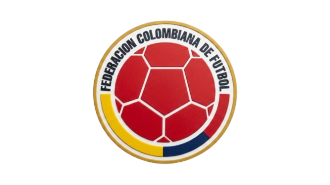
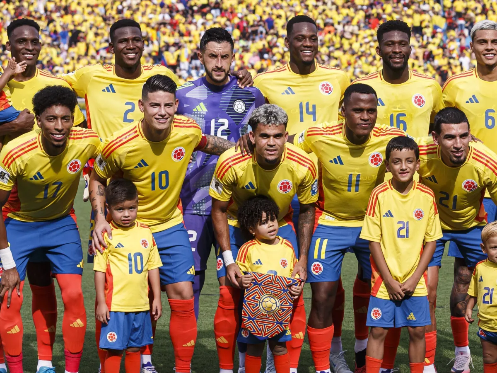

Colombia
Colombia
6
Participações
(1962-2018)

América do Sul
A história da Seleção Colombiana de Futebol em Copas do Mundo é marcada por momentos de brilhantismo, grandes gerações de craques e uma evolução gradual no cenário internacional. A equipe fez a sua estreia no Mundial do Chile em 1962, onde protagonizou um jogo histórico ao empatar por 4 a 4 contra a poderosa União Soviética, marcando o único gol olímpico da história das Copas com Marcos Coll. Posteriormente, nos anos 1990, impulsionada por uma geração dourada liderada por ídolos como Carlos Valderrama e Freddy Rincón, a Colômbia alcançou destaque midiático e se classificou para três edições consecutivas (1990, 1994 e 1998), chegando pela primeira vez às oitavas de final na Itália em 1990. No entanto, o ápice da história dos Cafeteros em Mundiais aconteceu no Brasil em 2014; após 16 anos de ausência, a seleção encantou o mundo com um futebol ofensivo e alcançou a sua melhor campanha histórica ao chegar às quartas de final, torneio que também consagrou o craque James Rodríguez como o artilheiro daquela edição com 6 gols.

Goleiros:
Defensores:
Meio-campistas:
Atacantes:
Participações
(1962-2018)
Títulos
Melhor campanha
Primeira
participação
| Ano | Sede | Resultado |
|---|---|---|
| 1962 |
|
Fase de grupos |
| 1990 |
|
Oitavas de Final |
| 1994 |
|
Fase de grupos |
| 1998 |
|
Fase de grupos |
| 2014 |
|
Quartas de Final |
| 2018 |
|
Oitavas de Final |
| Participações | 6 |
| Títulos | 0 |
| Vice-campeonatos | 0 |
| 3º Lugar | 0 |
| 4º Lugar | 0 |
| Melhor campanha | Quartas de Final |
| Jogos disputados | 22 |
| Vitórias | 9 |
| empates | 3 |
| Derrotas | 10 |

calendar_month Junho - Julho de 2026
location_on México, Estados Unidos e Canadá